Use Case
In the previous use case, we have uploaded around 3.4 GB of airline data set from the Hardvard Dataverse into S3 and did analytics using a combination of Athena and QuickSight. This was all fine and dandy, but the only problem was that we had to do most of the tasks manually.
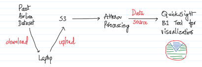
In the corporate setup where we do a lot of analytics to get some meaningful insights, performing tasks manually takes a lot of time and also prone to error. This is where AWS Data Pipeline and AWS Glue comes into play. In this use case we would be using Data Pipeline to create a pipeline with a set of activities to analyse the data in S3. Since, we have already uploaded a big data set into S3, we would be leveraging the same.
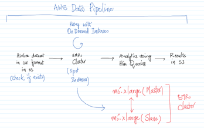
We would try to automate the below activities in the AWS Data Pipeline, the same is represented in the above diagram also.
- Set a precondition to see if the data is there in S3
- Create an EMR Cluster using the Spot Instances
- If the Cluster has not been created, then use the On Demand Instances
- Perform analytics to figure out the busiest airport over years
- Tear down the entire setup
The entire thing would be done using Hive Queries and so we need an EMR Cluster for the same. AWS Data Pipeline also automates the process of creating the EMR Cluster and then we should be able to do the data formation and analytics on the same.
Once a pipeline has been created, the same can be scheduled at regular intervals or can be executed on demand. Again, as in the previous use case we will try to get some interesting insights from real data.
AWS Services: S3, EMR, Data Pipeline.
-- Create a Security Group from the EC2 Management Console and allow 22/SSH inbound for everyone as shown below. Note down the “Security Group ID”.
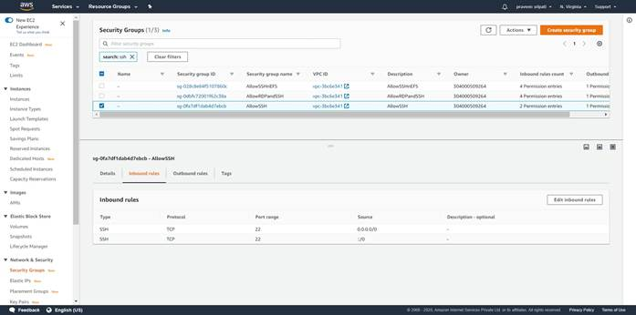
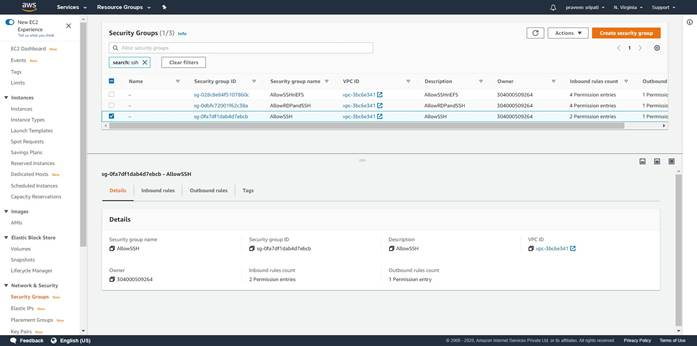
-- Create a Key Pair and note down the name.
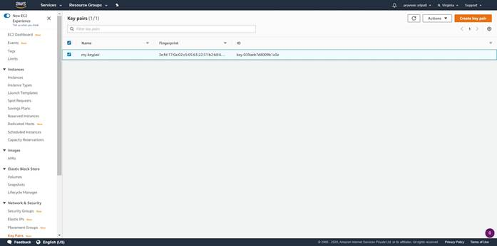
-- Go to the SNS Management Console and create a Topic. Make sure to note down the Topic ARN.
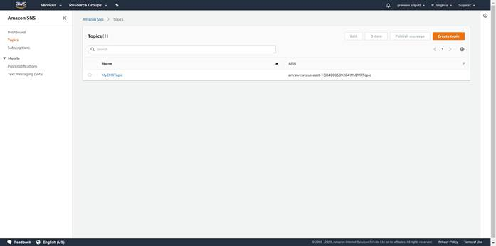
-- Subscribe to the Topic via Email and make sure that the status of the
Subscription is confirmed.
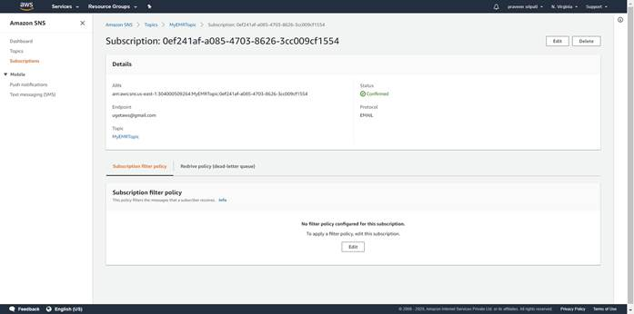
-- Create a bucket in S3 with a folder called “input” and upload the Airline dataset into it. The data can be downloaded from the Harvard Dataverse Site (here). If this step has been performed for the previous use case there is no need to perform it again. Again note down the bucket name.
Depending on your network bandwidth, try to download/upload the appropriate amount of data. Note that S3 provides only up to 5GB of storage for free.
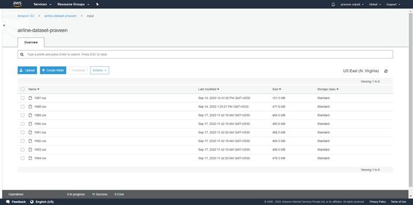
-- Create a “logs” folder in the same bucket.
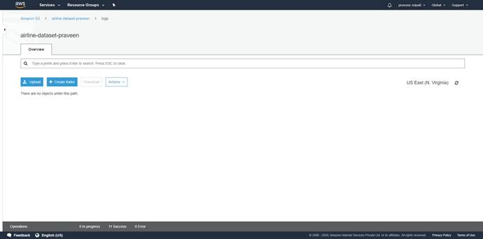
-- Create a file called “emr-datapipeline.json” with the below content and make sure to change the highlighted sections with the details noted in the previous steps. Also, note down the latest EMR release from the below URL and replace “emr-5.30.1” with the lasts one.
https://docs.aws.amazon.com/emr/latest/ReleaseGuide/emr-release-components.html
{
"objects": [
{
"failureAndRerunMode": "CASCADE",
"resourceRole": "DataPipelineDefaultResourceRole",
"role": "DataPipelineDefaultRole",
"pipelineLogUri": "s3://airline-dataset-praveen/logs/",
"scheduleType": "ONDEMAND",
"name": "Default",
"id": "Default"
},
{
"role": "DataPipelineDefaultRole",
"subject": "Hive Ran Successfully",
"name": "SuccessNotification",
"id": "ActionId_Y3WGh",
"message": "Hive Ran Successfully",
"type": "SnsAlarm",
"topicArn": "arn:aws:sns:us-east-1:304000509264:MyEMRTopic"
},
{
"role": "DataPipelineDefaultRole",
"subject": "Hive Ran Failure",
"name": "FailureNotification",
"id": "ActionId_75ocL",
"message": "Hive Ran Failure",
"type": "SnsAlarm",
"topicArn": "arn:aws:sns:us-east-1:304000509264:MyEMRTopic"
},
{
"maximumRetries": "1",
"role": "DataPipelineDefaultRole",
"s3Key": "s3://airline-dataset-praveen/input/1987.csv",
"name": "CheckIfInputExists",
"id": "PreconditionId_3V3Y8",
"type": "S3KeyExists"
},
{
"maximumRetries": "1",
"useOnDemandOnLastAttempt": "true",
"coreInstanceBidPrice": "19",
"coreInstanceCount": "1",
"masterInstanceType": "m5.xlarge",
"releaseLabel": "emr-5.30.1",
"type": "EmrCluster",
"attemptTimeout": "15 Minutes",
"terminateAfter": "60 Minutes",
"name": "EMR-Cluster-For-AirlineData",
"coreInstanceType": "m5.xlarge",
"keyPair": "my-keypair",
"id": "EmrClusterId_oOXSg",
"masterInstanceBidPrice": "19",
"additionalMasterSecurityGroupIds": "sg-0fa7df1dab4d7ebcb"
},
{
"directoryPath": "s3://airline-dataset-praveen/input/",
"dataFormat": {
"ref": "DataFormatId_FBIwP"
},
"name": "S3Node-CSV-Data",
"precondition": {
"ref": "PreconditionId_3V3Y8"
},
"id": "DataNodeId_o4MSC",
"type": "S3DataNode"
},
{
"column": [
"Year INT",
"Month INT",
"DayofMonth INT",
"DayOfWeek INT",
"DepTime INT",
"CRSDepTime INT",
"ArrTime INT",
"CRSArrTime INT",
"UniqueCarrier STRING",
"FlightNum INT",
"TailNum STRING",
"ActualElapsedTime INT",
"CRSElapsedTime INT",
"AirTime INT",
"ArrDelay INT",
"DepDelay INT",
"Origin STRING",
"Dest STRING",
"Distance INT",
"TaxiIn INT",
"TaxiOut INT",
"Cancelled INT",
"CancellationCode STRING",
"Diverted STRING",
"CarrierDelay INT",
"WeatherDelay INT",
"NASDelay INT",
"SecurityDelay INT",
"LateAircraftDelay INT"
],
"name": "CSV-Input",
"id": "DataFormatId_FBIwP",
"type": "CSV"
},
{
"directoryPath": "s3://airline-dataset-praveen/final-results",
"dataFormat": {
"ref": "DataFormatId_0iWke"
},
"name": "S3Node-FInal-Results",
"id": "DataNodeId_3Fjg6",
"type": "S3DataNode"
},
{
"column": [
"Origin INT",
"Total INT"
],
"name": "CSV-Output",
"id": "DataFormatId_0iWke",
"type": "CSV"
},
{
"maximumRetries": "0",
"output": {
"ref": "DataNodeId_3Fjg6"
},
"input": {
"ref": "DataNodeId_o4MSC"
},
"stage": "true",
"onFail": {
"ref": "ActionId_75ocL"
},
"name": "AnalyzeData",
"hiveScript": "delete jar
/mnt/taskRunner/emr-hive-goodies.jar;INSERT OVERWRITE TABLE ${output1} select
Origin, count(*) As Total from ${input1} group by Origin order by Total;",
"id": "HiveActivityId_ySH25",
"runsOn": {
"ref": "EmrClusterId_oOXSg"
},
"type": "HiveActivity",
"onSuccess": {
"ref": "ActionId_Y3WGh"
}
}
],
"parameters": []
}
-- There are tons of ways of modifying the JSON. Using the VS Code makes it easy to change the file. The same can be downloaded from the below URL.
https://code.visualstudio.com/
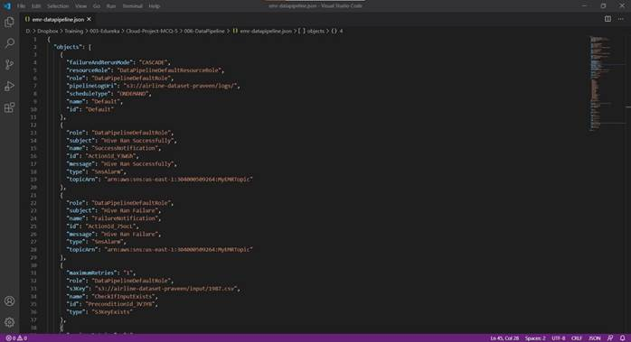
-- Go to the AWS Data Pipeline Management Console and click on “Get started now”.
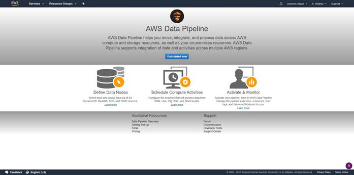
-- Give some name for the Data Pipeline. Click on “Import a definition”, “Load local file” and point to the JSON file which was created earlier. For the schedule, select “on pipeline activation”. Finally click on “Edit in Architect”.
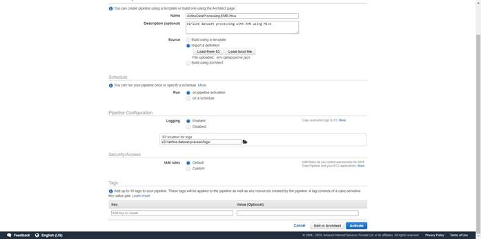
-- A DAG (Directed Acyclic Graph) will be displayed as shown below with the Activities, DataNodes, Schedules, Resources, Preconditions etc. Click on “Activate”.
Here Data Pipeline would be automatically checking if the input data exists in S3, create an EMR Cluster and once it ready execute a Hive script to output the results to S3.
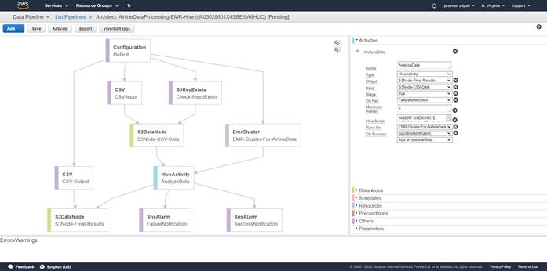
-- In the “Filter” select “All” to display the “Component name” and “Status”.
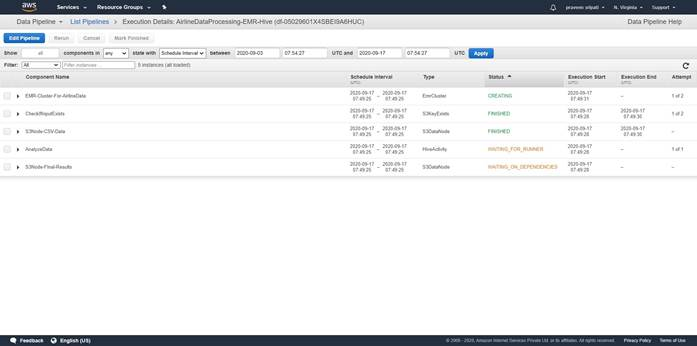
-- Go to the “EMR Management Console” and there should be an EMR Cluster in the “Starting” status.
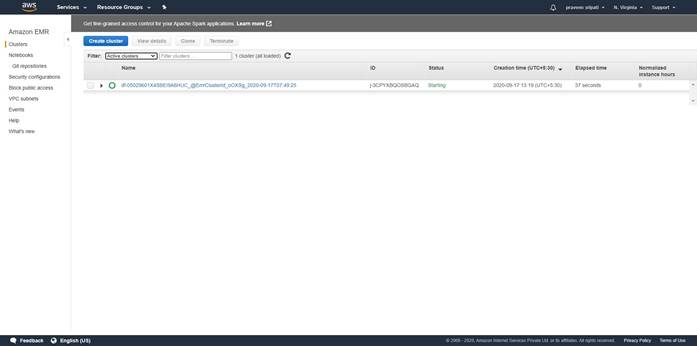
-- Click on the Cluster name to see the Summary and Details of the Cluster.
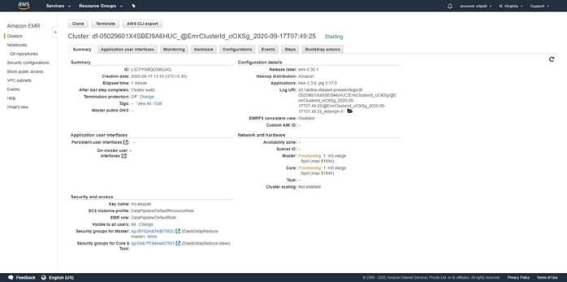
-- Click on the Hardware and notice that the EC2 instances are in a provisioned state. Luckily we were able to get the EC2 instances with the Spot pricing. For some reason if the Spot instances are not available, then the EMR Cluster creation will be retried with On Demand pricing to make sure we get the desired EC2 instances for setting up the EMR Cluster.

-- Click on the Steps tab and see that the installation of the softwares and
boot strapping is in a pending state.
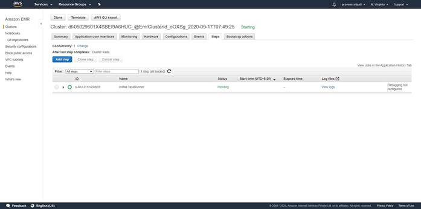
-- Go to the EC2 Management Console and we see that there two EC2 instances, one for the master and the other for the slave. For the convenience they have been named appropriately. Which is what can be got by looking at the Security Group attached to the EC2 instance. Note that for the Master EC2 instance the AllowSSH Security Group is automatically attached, so we should be able to connect to it for the sake of debugging/troubleshooting.
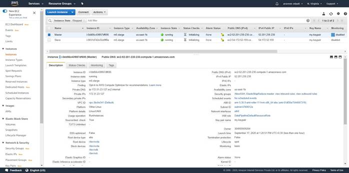
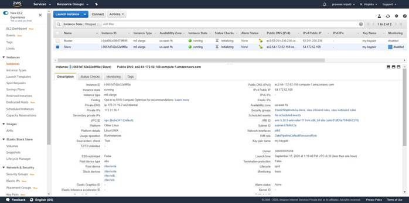
-- Open Putty and specify “username@master-ip-address” as shown below.
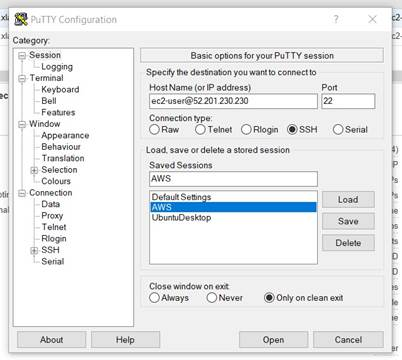
-- Go “Connection à SSH à Auth” and in the “Private key file for authentication”, browse and point to the Private Key in the PPK format. Click on “Open” and we would be connected to the EC2 instance.
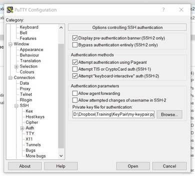
-- We would be connected to the Master EC2 instance as shown below.
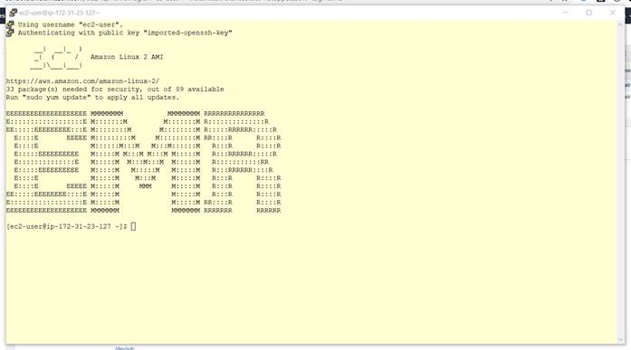
-- In around 7 minutes the EMR Cluster would be in a “Waiting” state for the Steps (Big Data tasks) to be executed. The same can be observed from the EMR Management Console.
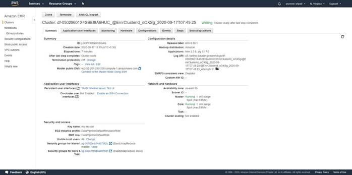
-- Also, under the Steps tab the “Install TaskRunner” would be in a “Completed”
Status. This means that the EMR Cluster is ready for the Hive Script to
executed.
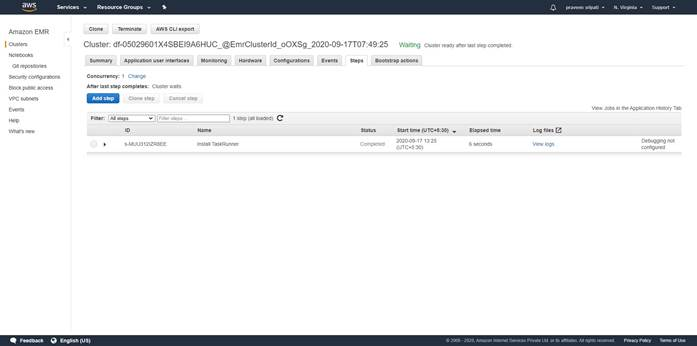
-- In the Data Pipeline Management Console, we can notice that the EmrCluster and the AnalyzeData (Hive Script) would also be in a RUNNING status. This means that the Hive Script is getting executed on the EMR Cluster.
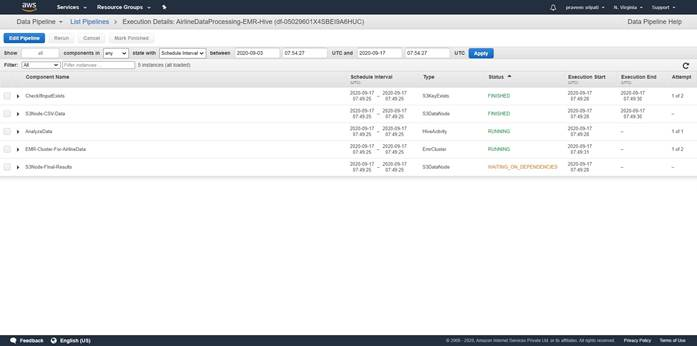
-- Expand the “AnalyzeData” action and click on the refresh button beside it and the log files would be available in a few minutes. These log files would be definitely useful for debugging/troubleshooting any problems.
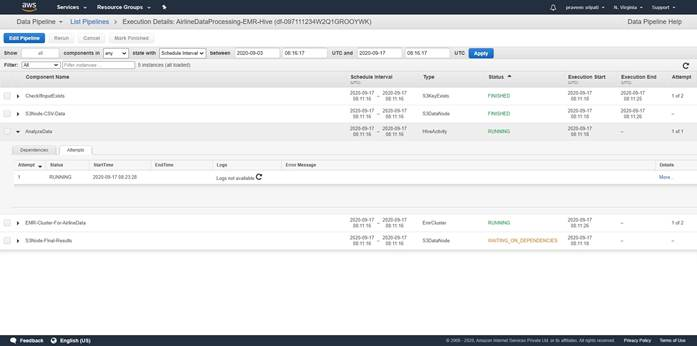
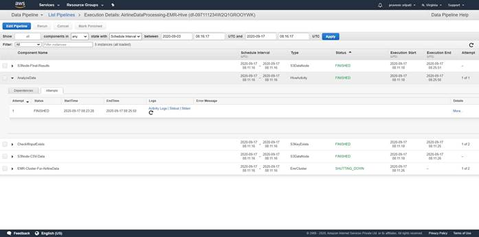
-- In a few minutes, the “AnalyzeData” and the “S3Node-Final-Results” are in a FINISHED status. This means that the Hive Script has been successfully executed and the results have been written to S3.
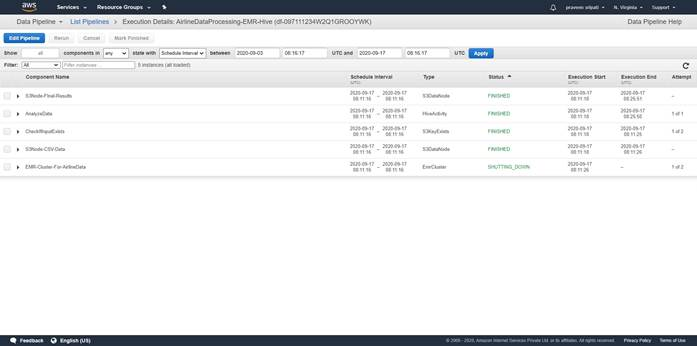
-- Also, we would be getting an email that the Hive Script ran through
successfully from the SNS.
-- Here is the output of the Hive script in S3. The same has been attached for reference. By downloading and opening this file from S3, we get the busiest and the idle airports based on the number of flight departures from a particular airport across multiple years. Once the Hive script starts executing, it takes about 2 minutes to process 3.4 GB of data.

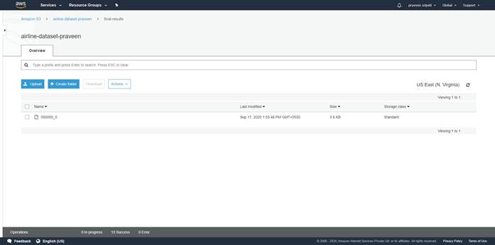
-- Since the Hive script ran through, the EMR cluster would be automatically
terminated. The same can be observed from the EMR Management Console. The EC2
instances also would be automatically terminated.
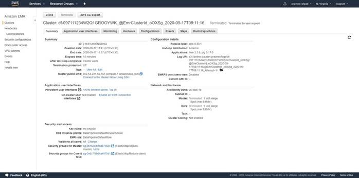
-- In the Data Pipeline Management Console, all the Components would be in a FINISHED status.
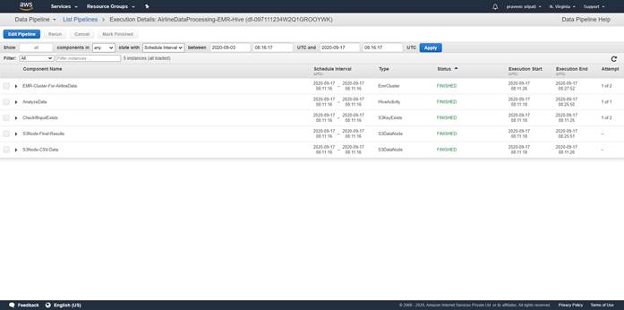
-- In the Data Pipeline Management Console, select the pipeline and delete it.
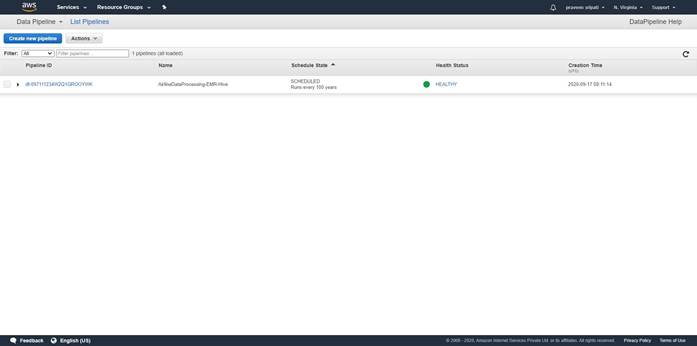
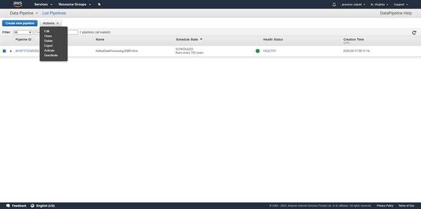
To conclude, we have seen how to automatically setup an EMR Cluster and then peform data processing on it using Hive Scripts using Data Pipeline. This was executed On Demand, but the same can be also scheduled at regular intervals. Also, we have used one Master and one Slave EC2 instances. But, the Big Data tools like Hive, Spark, Tez can scale to thousands of EC2 instances for processing TBs and PBs of data.
As of this writing it costs 0.48 USD per hour for On Demand Instances and 0.2556 USD per hour for Spot Instances. Note that this includes the EMR pricing and we are priced per second, so exactly what we have used for. The Data Pipeline would try to setup EMR Cluster using Spot Instances and if for some reason the Spot Instances are not available and then On Demand Instances would be used. Also, keep in mind that the Spot Instances can be terminated any point of time.